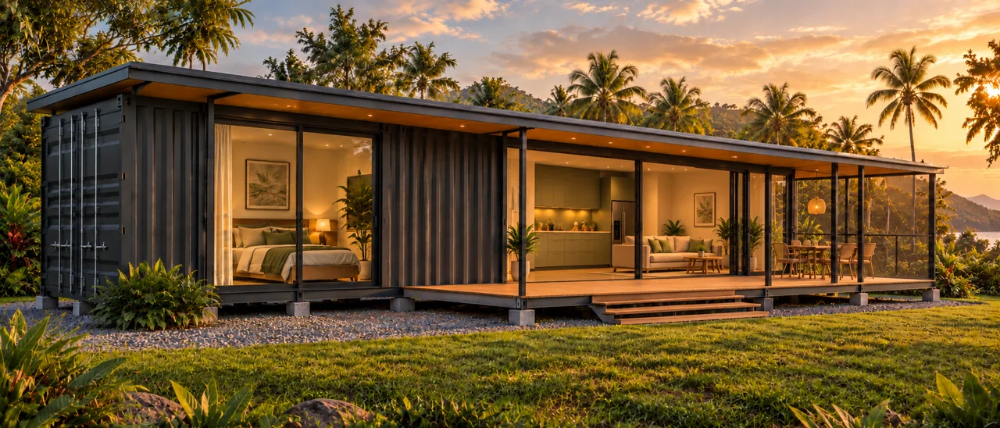
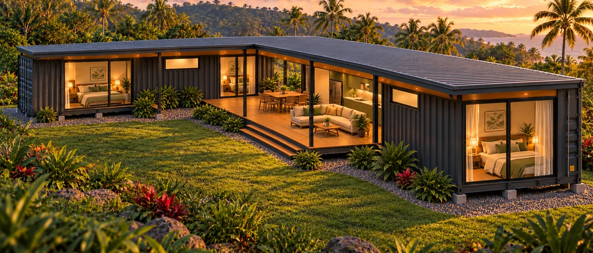
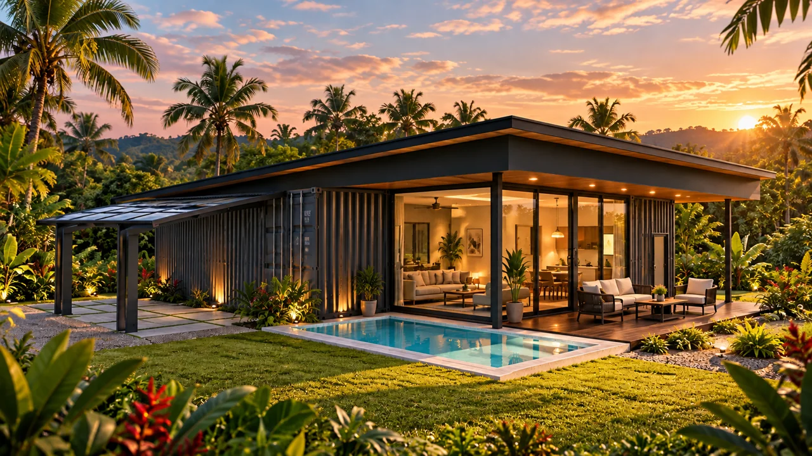
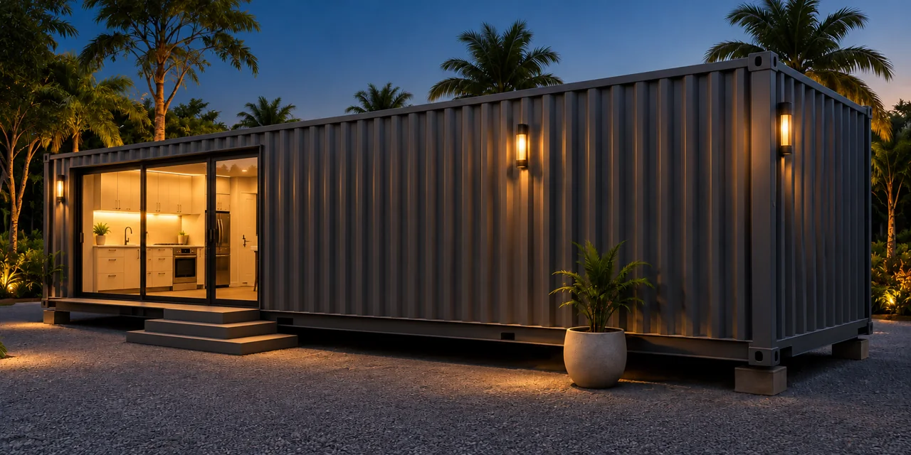
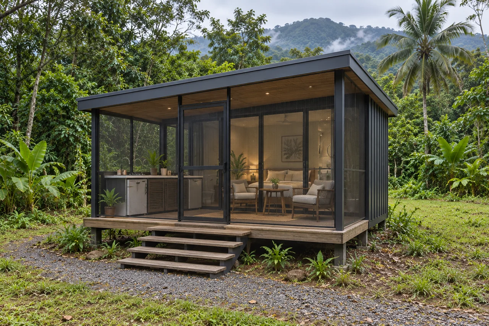
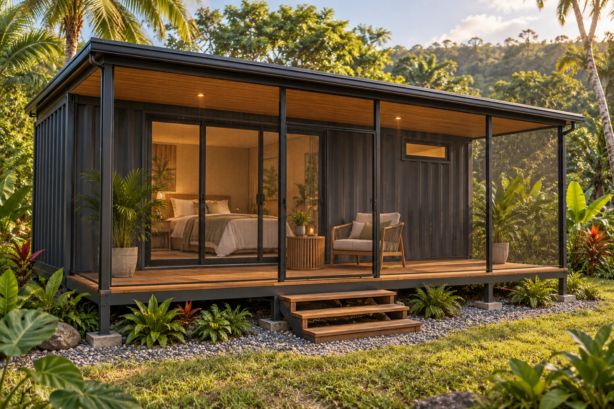
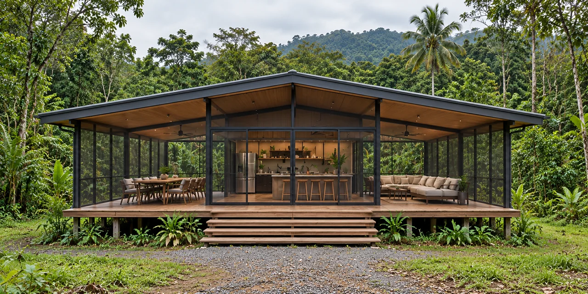

Horizon 40
Vivienda compacta de un dormitorio con cocina y sala, cuarto técnico independiente, terraza delantera y patio lateral.
Explorar este modelo →Conceptos de viviendas en contenedores en Panamá, desde una vivienda compacta hasta hogares familiares y alojamiento con servicios compartidos.
Horizon es la línea residencial modular propia de BridgePoint Strategic Group para quienes exploran casas contenedor y casas modulares en Panamá, con diseños de viviendas, núcleos de servicios y conceptos de casitas.
Conversemos sobre su proyecto en Veraguas, incluyendo Mariato y Torío. Las propuestas finales se desarrollan según su terreno y sus necesidades.

Vivienda compacta de un dormitorio con cocina y sala, cuarto técnico independiente, terraza delantera y patio lateral.
Explorar este modelo →
Tres dormitorios y dos baños en una vivienda en L formada por dos contenedores de 40 pies. El dormitorio principal dispone de baño privado; los otros dormitorios comparten un baño.
Explorar este modelo →
Vivienda de dos dormitorios con sala central acristalada, cocina independiente y cuarto de lavandería, despensa y servicios. Las terrazas cubiertas conectan ambos extremos con el exterior.
Explorar este modelo →Cuatro dormitorios, dos baños compartidos y una amplia sala acristalada, con cocina, lavandería y cuarto de servicios y despensa en la parte posterior. Una amplia terraza delantera y dos traseras amplían la vivienda al exterior.
Explorar este modelo →Elija alojamiento independiente con cocina pequeña, o casitas privadas con servicios en un Núcleo Central compartido. Core 40 es un módulo independiente de servicios residenciales.

Módulo lineal de cocina y servicios con despensa, lavandería, baño y cuarto técnico con acceso exterior. Diseñado para conectarse con espacios de vivienda adicionales.
Explorar este modelo →
Alojamiento privado completamente amueblado y equipado, con baño y cocina exterior en una terraza cubierta de 4 m.
Explorar este modelo →
Alojamiento privado completamente amueblado y equipado, con baño y terraza de 3 m, diseñado para utilizar un Núcleo Central independiente para cocinar y lavar.
Explorar este modelo →
Núcleo de cocina, lavandería y servicios compartidos con terrazas cubiertas para comer y convivir, destinado a un conjunto planificado de casitas.
Explorar este modelo →Más allá de las viviendas individuales, el diseño modular abre posibilidades para crear lugares donde vivir, trabajar, recibir atención y hospedar visitantes. Estos conceptos ilustran cómo podrían organizarse espacios basados en contenedores para responder a distintas necesidades.

Alojamiento privado organizado alrededor de cocinas, comedores e instalaciones comunitarias compartidas.
Este concepto explora viviendas de mayor permanencia para personas que no pueden costear una vivienda, alojamiento de transición mientras personas y familias recuperan su estabilidad económica y alojamiento temporal después de desastres.
Los proyectos podrían desarrollarse con gobiernos, ONG u organizaciones comunitarias, definiendo con la organización patrocinadora el financiamiento, los criterios de elegibilidad, la gestión y los servicios de apoyo.

Conceptos modulares para servicios de salud humana o veterinaria, con áreas de consulta, tratamiento y apoyo planificadas para cada uso. La distribución, el equipamiento y los requisitos se desarrollarían con los profesionales pertinentes y los socios del proyecto.

Explore posibilidades de alojamiento boutique y alquileres vacacionales, combinando espacios privados para huéspedes con áreas compartidas de comedor, recreación o recepción, según el proyecto.

Conceptos de oficinas que integran recepción, salas de reuniones y espacios de trabajo privados en un conjunto coordinado, con conexiones techadas e instalaciones de apoyo adaptadas a las necesidades de la organización.
Las imágenes conceptuales ilustran posibles aplicaciones, no proyectos terminados. Cada propuesta requiere su propio desarrollo de diseño, evaluación del terreno, especificaciones y aprobaciones aplicables.
Visualizaciones conceptuales. El diseño final, las especificaciones y el alcance se definirán para cada proyecto. El mobiliario, el paisajismo y los demás elementos ilustrados no están incluidos automáticamente.